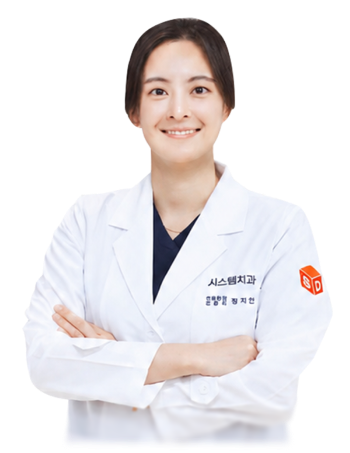
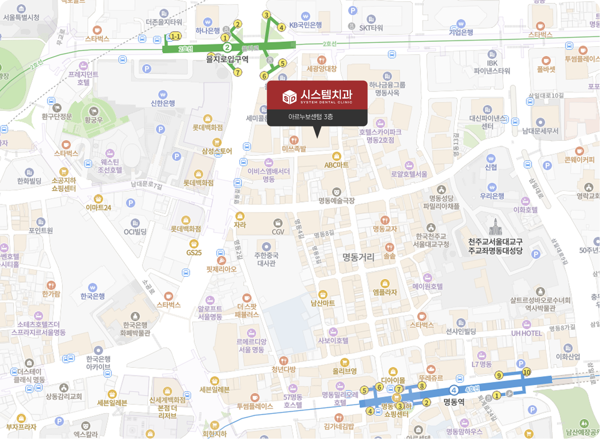

대표원장
정지안
통합치의학과 전문의
경력
- 미국 임플란트학회(AAID) 정회원
- 대한노년치의학회 평생회원
- 대한심폐소생협회 점눈심장소생술 Provider
- 대한치과마취과학회 정회원
- 대한심미치과학회 정회원
- 대한통합치과학회 정회원
- 오스템임플란트 임상자문위원
- 네오임플란트 임상자문위원
학력
- 서울대학교 치의학대학원 석사 과정
- 서울대학교 Advanced Implant
Therapy Course 수료
환자 한 분 한 분을 생각하는 진료
시스템치과를 소개합니다
환자의 입장에서 먼저 생각하며, 분야별 협진과 정밀 진단으로 맞춤 치료를 진행합니다.

통합치의학과 전문의

구강악안면외과 전문의

통합치의학과 전문의
보철보존과 치과의사

보철보존과 치과의사

보철보존과 치과의사
위생적인 시스템과 편안한 공간 구성으로 환자 중심의 진료 환경을 제공합니다.


시스템치과는 모든 비급여 진료 항목에 대해 환자분들이 쉽게 확인하실 수 있도록 명확하게 안내해드리고 있습니다.
| 분류 | 항목 | 비용 (단위:만원) | |
|---|---|---|---|
| 임플란트 | 국산 | 58 ~ 90 | |
| 뼈이식 | 15 ~ 100 | ||
| 상악동 거상술 | 50 ~ 200 | ||
| 심미치료 | 치아성형 | 15 ~ 70 | |
| 치아미백 | 20 ~ 60 | ||
| 심미보철 | 40 ~ 70 | ||
| 라미네이트 | 밀크네이트 | 77 | |
| 일반보철 | 크라운 | 골드 | 50 ~ 60 |
| PFM-PFG | 40 ~ 70 | ||
| POST | 10 ~ 30 | ||
| 인레이 | 세렉 | 28 ~ 35 | |
| 골드 | 30 ~ 35 | ||
| 레진 | 레진 | 7 ~ 15 | |
| 틀니 | 틀니 | 150 ~ 200 | |
| 틀니수리 | 10 ~ 30 | ||
| 진단서 | 일반 진단서 | 1만원 | |
| 상해 진단서 | 5만원(3주 미만), 10만원(3주 이상) | ||
| 치료 확인서 | 1만원 | ||
| 진료비 추정서 | 5만원(천만원 미만), 10만원(천만원 이상) | ||
| 소견서 | 2만원 | ||
| 건강 진단서 | 1만원 | ||
| 병사용 진단서 | 2만원 | ||
| 장애인 진단서 | 10만원 | ||
| 기타 증명서 | 5천원 | ||
| 진료기록 사본 | 진료기록부 | 5천원 | |
· 상기 비용은 부가세 포함 금액이며, 진료 내용 및 환자 상태에 따라 변동될 수 있습니다.
· 더 자세한 사항은 내원 시 안내 데스크에 문의해 주시기 바랍니다.
편리한 위치와 체계적인 진료 시스템, 첨단 장비 기반의 맞춤 진료를 제공합니다.
 지도 안내
지도 안내
서울특별시 중구 명동7길 21
아르누보센텀 3층 시스템치과의원

02-771-2875

평일 09:30 - 19:30
토요일 09:30 - 14:30
점심시간 13:00 - 14:30
※ 일요일 및 공휴일 휴일
 지하철역 길 안내
지하철역 길 안내을지로입구역 2호선 을지로입구역 5번, 6번 출구에서 200M
명동역 4호선 명동역 6번 출구에서 500M
 네이버 지도
네이버 지도 카카오맵
카카오맵 T MAP
T MAP 구글 지도
구글 지도